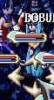
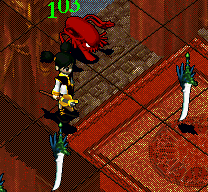
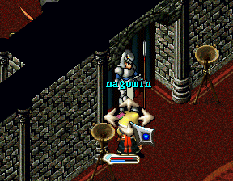

巫術師
１、キリの村のパブにいるレオーネに話し、アリエールへの手紙を貰う。
２、キリの村の北東にあるソルキア(349.261)フォヌンの家に行き、アリエールに話し、希望のろうそくを貰う。
３、希望のろうそくを持った状態で海底洞窟2Fにある怪しい岩(35.7)に入る。
４、黒の祈りの洞窟内にいるモエコ（萌子）に「ルクツハウゼンの証」（恐怖旅團之証）を貰う。
↓黒の祈り内の敵はスペクターとブランディッシュ。

↓ここの守門人はルクツハウゼンの証（恐怖旅團之証）があると通してくれるようになります。

５、黒の祈りの最下層にいるルビを倒す。
※ボス戦はルビLv50、スペクターLv30、ブランディッシュLv30
６、その後、巫術師アリエンナに話すとアブソルス（物理攻撃吸収スキル）、
巫術師マーチに話すとアブソルト（魔術攻撃吸収スキル）が5000Gで覚えられる部屋に行く。
７、それぞれの部屋の息吹く本に話すとスキルを覚える事ができ、
フォヌンの家にいる巫術師フォヌンに話すと巫術師になることができる。